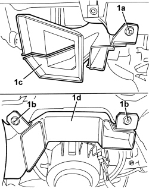

5010C55 LOWER AIR DIFFUSER (ONE) LH OR RH - R.R
- Path
- Procedures > 50 AUXILIARY UNITS > 5010 CLIMATE CONTROL - MISCELLANEOUS > 5010C AIR VENTS > 5010C55 LOWER AIR DIFFUSER (ONE) LH OR RH - R.R
- Kind
- repair procedure (removal / refitting; the operation number is the code)
- Applies to
- all engines; all production periods
- Interactive page
- https://sloeber94.github.io/elrnDB-aBrrSpdr/en/#/946002253
Applies to: all engines; all production periods
 Removing
Removing
 Refitting
Refitting- Move the front seat in question to the rear end of its travel.
1. Working under the dashboard on the right or left side, undo bolts (1a) or (1b), then remove left duct (1c), or right duct (1d), releasing from the air conditioner casing air intake.

Applies to: all engines; all production periods
Refitting
Removing- Check that the duct is not damaged.
- Fit the duct in its housing and engage in its seat on the air conditioner housing, then secure with bolts.
- Move the front seat to an intermediate position.
Topics that link to this page (13)
- 1820B21 MASTER CYLINDER (PUMP) - R R FOR RIGHT HAND DRIVE VERSIONS
- 3330B02 PEDAL ASSEMBLY - R.R
- 3330B23 BRAKE PEDAL - R.R. FOR RIGHT HAND DRIVE VERSIONS
- 3330B27 CLUTCH PEDAL - R.R. FOR RIGHT HAND DRIVE VERSIONS
- 3330B42 PEDAL UNIT SUPPORT - R.R. FOR RIGHT HAND DRIVE VERSIONS
- 3330D18 BRAKE SERVO R R FOR RIGHT HAND DRRIVE VERSIONS
- 5040C10 AIR CONDITIONING CASING - R.R
- 5040C30 AIR CONDITIONING FAN - R.R.
- 5040C50 AIR CONDITIONING HEATER RADIATOR - R.R.
- 5040C64 A/C EVAPORATOR - R+R
- 5040D80 AIR CONDITIONING SYSTEM CABLE LOOM - R.R. OR REPLACE
- 5505C31 BUILT-IN WIRING UNDER DASHBOARD - R.R.
- 7210A74 R R FACIA SUPPORT BEAM